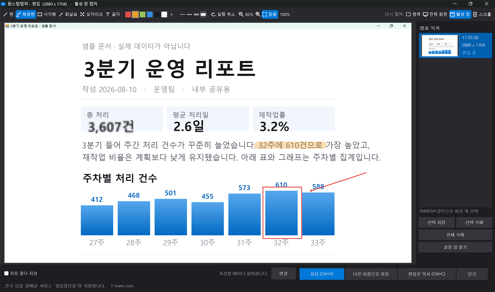
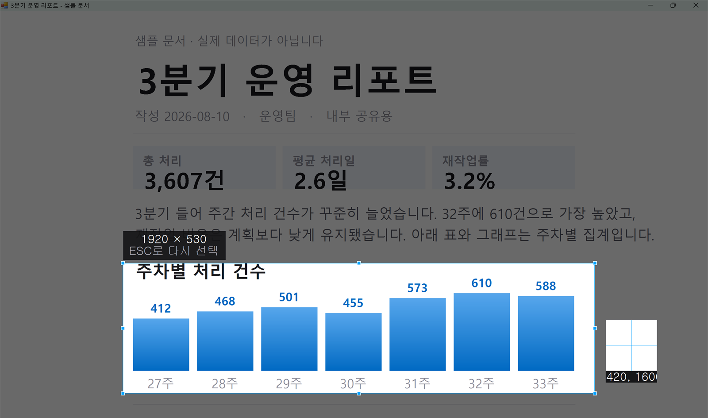

화면을 찍고,
바로 표시하고, 바로 넘깁니다
로그인도 계정도 없이.
켜둔 걸 잊을 만큼 가볍습니다.
Windows 10 / 11 · v1.9.9 · 관리자 권한 필요 없음
이전 판·변경 내용 보기
- 78KB받는 파일 전체설치 파일까지 포함
- 1줄광고는 이게 전부편집 창 맨 아래, 팝업 없음
- 0건밖으로 나가는 데이터계정도 로그인도 없음
말로 설명하는 것보다, 한 번 해보시죠
방금 그 느낌 그대로입니다 — 진짜 프로그램은 Alt + 1로 시작해요.
찍은 자리에서 바로 표시합니다
다른 편집 프로그램을 열 필요가 없어요. 아래는 실제 프로그램 화면입니다.

맨 아래 한 줄이 이 프로그램의 광고 전부입니다
표시 도구 네 가지, 이게 전부입니다
많은 기능 대신, 매일 쓰는 것만 빠르게.
펜 · 형광펜
강조할 곳에 바로 긋습니다.
사각형 · 화살표
짚어줄 곳을 분명하게.
모자이크
숫자·이름처럼 가릴 것을 가립니다.
글자
써넣고 끌어서 옮길 수 있습니다.
캡처하고 나서가 더 오래 걸리죠
보통은 이렇게 하죠
- 1화면을 캡처하고
- 2그림판이나 편집 프로그램을 열고
- 3붙여넣고
- 4표시하고, 저장하고
- 5저장한 파일을 찾아서 첨부
…벌써 지치네요.
원스텝캡쳐는
- 1Alt + 1 눌러서 찍고
- 2그 자리에서 바로 표시하고
- 3대화창에 바로 붙여넣기
끝. 그래서 원스텝입니다.
단축키 네 개만 기억하세요
캡처 방식 순서와 숫자가 그대로 맞습니다. 설정 창에서 바꿀 수 있어요.
영역 캡처
드래그로 범위 선택
전체 화면
모니터가 여러 대여도 한 장으로
활성 창
지금 보고 있는 창만
스크롤 캡처
긴 페이지를 이어 붙여 한 장으로

고른 범위만 밝게 남고, 크기와 확대경이 함께 표시됩니다
설치는 30초면 끝나요
내려받기
위의 파란 버튼을 눌러 설치 파일을 받습니다.
압축 풀고 실행
받은 ZIP 을 오른쪽 클릭해 압축을 풀고, 그 안의 설치.cmd 를 실행합니다.
Alt + 1 눌러보기
설치가 끝나면 바로 첫 캡처를 찍어보세요.
관리자 권한도, 재부팅도 필요 없습니다. 압축을 푼 폴더는 지워도 됩니다.
감춘 것이 없습니다
처음 받는 프로그램이 무엇을 하는지 알 수 없다는 점이 가장 불편하니까요.
- !광고는 편집 창 맨 아래 한 줄뿐입니다. 「꽃집청년들」이 이 프로그램을 지원합니다. 팝업·배너가 없고, 프로그램이 광고를 받아오지 않아 추적이 원리적으로 불가능합니다.
- ✓사용 기록·통계·개인정보를 수집하지 않습니다. 찍은 화면은 내 컴퓨터 밖으로 나가지 않습니다.
- ✓계정 만들기, 로그인을 요구하지 않습니다. 다른 프로그램을 끼워 설치하지도 않습니다.
- ✓인터넷에 접속하는 곳은 [업데이트 확인] 버튼 하나뿐이고, 그때도 최신 판 번호만 받아옵니다.
- ✓소스가 배포본에 평문으로 들어 있어 메모장으로 열어 확인하실 수 있습니다.
- ✓시스템 폴더를 건드리지 않고 내 사용자 폴더 안에만 설치됩니다.
미리 답해 둡니다
백신이 경고하지 않나요?
한 번 물어볼 수 있습니다. Windows 보안 기능(Smart App Control)이 서명되지 않은
.exe 를 막기 때문에, 이 프로그램은 Microsoft 가 서명한 PowerShell 을 통해
실행되는 형태로 배포됩니다. 백신이 이 방식 자체를 낯설게 보는 경우가 있습니다.
숨기려고 고른 방식이 아니라, 서명 없는 실행 파일이 아예 실행되지 않아서 택한 방식입니다. 대신 소스 전체를 열어 확인하실 수 있고, 아래 해시로 파일이 바뀌지 않았는지 대조하실 수 있습니다.
받은 파일이 진짜인지 확인하려면?
ZIP 파일이 있는 폴더에서 명령 프롬프트를 열고:
certutil -hashfile OneStepCapture-Setup.zip SHA256나온 값이 아래와 같아야 합니다.
1AB62DB52984A3ECE5CF90F62AE4B342F89F1F9007368E49D029B38035627594판이 바뀌면 이 값도 바뀝니다. (현재 v1.9.9 기준)
정말 가벼운가요? 어떻게 확인하죠?
받는 파일이 78KB 입니다. 설치 폴더는 약 1.4MB 인데 그중 1.2MB 가 아이콘 파일이고, 프로그램 본체는 약 240KB 입니다.
실행 중에는 작업 관리자를 열어 직접 보실 수 있습니다. 트레이에서 기다리는 동안 메모리 칸이 1MB 미만으로 표시됩니다. (Windows 가 쓰지 않는 메모리를 회수한 상태의 값이고, 편집 창을 열면 그림 크기만큼 늘어납니다.)
광고가 정말 한 줄뿐인가요?
네. 편집 창 맨 아래의 후원사 표기 한 줄이 전부입니다. 팝업·배너·전면 광고, 시작하거나 끌 때 뜨는 창이 없습니다.
그 문장은 프로그램 소스에 그대로 적혀 있습니다. 어딘가에서 받아오는 것이 아니라 고정된 글입니다. 그래서 광고를 위해 무엇을 보고 있는지 살필 이유도, 방법도 없습니다.
지우고 싶으면요?
시작 메뉴의 [원스텝캡쳐 제거] 를 실행하시면 됩니다. 설정과 캡처 기록까지 함께 정리되고, 저장해둔 이미지 파일은 지워지지 않습니다.
레지스트리는 [Windows 설정 > 앱] 목록에 등록하는 항목 하나만 쓰고, 제거할 때 같이 지워집니다.
그냥 써도 되나요? 어디까지 되나요?
받은 파일 안의 LICENSE.txt 에 적혀 있습니다. 요약하면:
- 개인적·업무적 용도로 자유롭게 사용하실 수 있습니다.
- 캡처한 결과물에 대한 권리는 전적으로 사용자에게 있습니다.
- 재배포와 판매는 허용되지 않습니다. 필요하면 이 페이지 주소를 알려주세요.